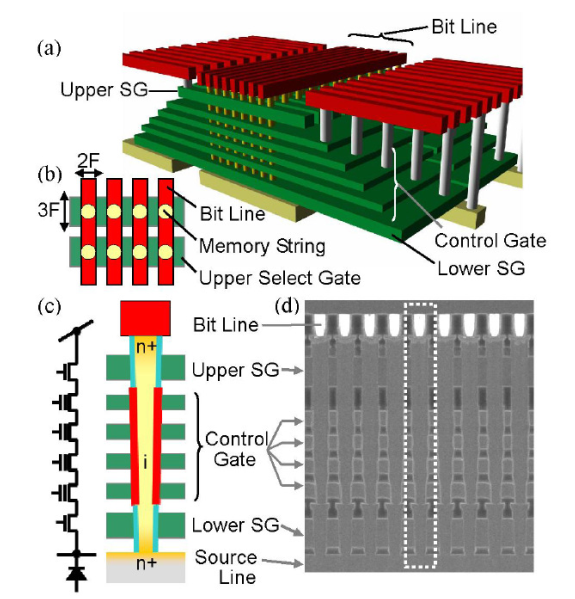
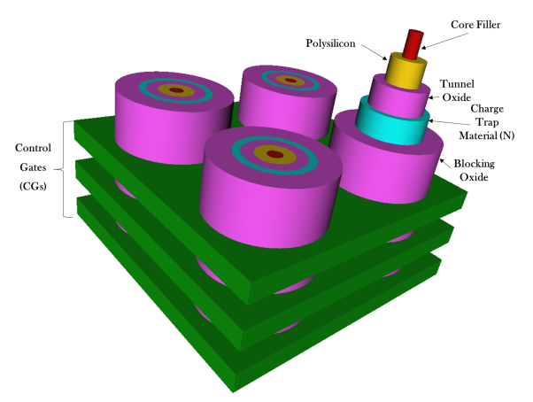

Different issues are faced upon by the feature size shrinking of flash memory.
Intrinsic phenomena like random doping fluctuations, random telegraphic noise and the electron injection statistics significantly reduce the margin between the threshold voltage distributions.
Multi bits per cell has made things worse reducing reliability and lifetime.
3D NAND flash has provided with a way to overcome all the limitations of planar flash memory.
Most of the 3D NAND rely on charge trap flash architecture while some rely on FG architecture.
In this paper, they discuss about the charge trap flash memory and 3D NAND architectures based on the CT process.
Following are two of the topological classification of different integration solutions:
Control Gate and Channel along the horizontal direction: This includes 3D Stacked option which is the preliminary attempt to achieve 3D integration starting from planar technology.
Control Gate along the horizontal direction and channel along the vertical direction: This includes the architectures like BiCS, P-BiCS, and the V-NAND architecture from Samsung including VRAT, VSAT and TCAT.
3D Stacked Architecture:
first idea and straightforward idea that stacking multiple planar layers of memory arrays would yield 3D layer.
As shown in image above.
Here, drain and bitline contacts are shared between NAND strings belonging to different layers, while source/wordlines contacts and source/drain selectors are associated to separate layers.
Cost and process technologies considerations of this architecture can be derived from those of the planar products
the major hurdle is represented by the thermal budget of the manufacturing process to grow and populate additional layers
here each layer is manufactured separately and this the architecture is flexible.
Since the layers are fabricated independently, there is a significant difference in the threshold voltage distribution with ISPP programming.
BiCS Architecture:
Control Gates are the different rectangles stacked on top of each other.

The bottom rectangle plate is the ensemble of Source Line Selectors terminating flash string.
Multiple holes are drilled through the stacks and filled with poly-silicon in order to form a series of vertically arranged NAND flash memory cells.
Bitline Selectors (BLS) and Bitlines (BL) contacts are on top of the structure
Each cell in the BiCS architecture works in depletion-mode since the poly-silicon constituting the body of the transistor is lightly n-doped with a uniform profile or even left un-doped. This reduces the manufacturing complexity of the p-n junction along the vertical direction of the plugs (also called pillars)
The CG plate intersection with a pillar maps a single memory cell. Each NAND Flash string of cells is connected to a BL contact via BLS, whereas the bottom of the string is connected to a common source diffusion formed directly on the process substrate made of silicon.

P-BiCS
BiCS evidenced some critical issues such as poor reliability characteristics of the memory cells interms of endurance and data retention, poor SLS performances (i.e., cut-off) and a high resistance of the SL, which limits the sensing performance
To solve these issues, a pipe-shaped BiCS architecture has been developed, namely the P-BiCS. This integration approach adopts a U-shaped vertical AND string
Damages in 3D NAND can be partially recovered by a process called "self-recovery"
Self recovery has been studied for 2D NAND before to improve lifetime. Proposal also included to increase temperature to accelerate self recovery
Heatwatch proposed to improve 3D NAND relability. Key idea is to optimize the read reference voltage (adapting it to the dwell time of workload and the current operating temperature).
Heatwatch:
efficiently tracks flash memory temperature and dwell time online
sends this information to our reliability model to predict the current voltages of flash cells
predict the current voltages based on the current cell voltages
Improves lifetime by 3.85X over the baseline that uses fixed reference voltage
Limited lifetime of NAND is because of wearout in flash cells by repeated programming and erase operations. After each PE cycle, the threshold voltage is affected because of the inadvertant trap of electrons in flash cell.
Some of these trapped electrons gradually escape during the idle time between the consecutive PE cycle. This time is called "dwell time"
This escape or detrapping is called self-recovery.
This can be accelerated by high temperature to the flash cell during the dwell time in 2D FG transistors.
But 3D NAND uses CT flash
Two effects shown in flash memory is studied in this paper:
Retention Loss: Leakage of charge carriers from the flash cell that contains valid data, that can induce errors
Program Variation: Random variation that can cause cell to be set to an incorrect voltage while programming
Some of the findings made are as follows:
increase in dwell time from 1 to 137 min slows retention loss by 40%
lowering temp from 70 to 0 C slows retention loss by 58%
increasing temperature from 0 to 70 C during programming increases program variation by 21%
effectiveness of self-recovery is correlated with dwell time experienced during the most recent 20 PE cycles
Errors in 3D NAND is dominated by retention errors. Thus, reducing retention errors by performing recovery cycles can increase lifetime. Recovery cycle means PE operation where program operatin is followed by an extended dwell time.
High temp increases electrom mobility. Thus short retention time in high temperature has same retention loss as long retention time at room temp.
And short dwell time at high temp as same self recovery effect as long dwell time at room temp.
They refer to other papers [8,12,24] for technique to find the threshld voltage values.
Read retry and the above technique is used to detect threshold voltage and fine tune it.